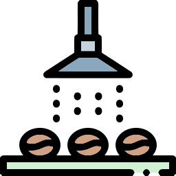
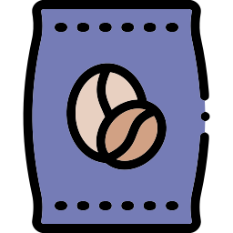
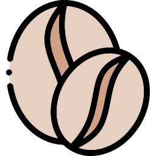

Classic 250g
A Coffee Co Original, these 100% Arabica whole beans are hand-roasted by our artisans. Best enjoyed as an espresso.
Premium Grade
Handpicked
Roasted To Perfection
Freshly Poured
The best quality coffee starts with premium-grade green beans. Arabica and Robusta are the two main species of coffee trees, and Arabica is by far the superior strain. We source the top 1% of the world’s finest Arabica beans. We work closely with every farmer and co-op to ensure that their methods of soil preservation, harvesting and processing will maximize their crop quality and ensure the sustainability of their environment.
Whole Bean Coffee
Our whole bean coffee is hand-roasted at out premises in Muizenberg, Cape Town. You can buy our beans in 250g bags at any of our café stores across the country. If you do not have a grinder at home, there are select stores that offer the option of grinding to the correct setting for you.
Decaffeination Process
Our green coffees are decaffeinated and manufactured using a non-chemical gentle carbon dioxide decaffeination process. Coffee cherries are washed in spring water and the outer fruit layers are removed mechanically to produce parchment coffee which is dried in the sun on raised matting. Once dried the parchment is removed by milling to produce green coffee beans which is bagged and prepared for export. The coffee beans are shipped to a decaffeination plant. Here green beans are steamed to soften, then treated with liquified carbon dioxide to absorb and remove the caffeine. Carbon dioxide is removed and the green beans are dried.
Storing Coffee
We suggest to keep the coffee in the packaging that it comes in, rolled up tightly and store in an air-tight container. Keep the container in a cool, dry place, away from the sunlight. Do not keep the coffee in the refrigerator/freezer. Due to the humidity in the local climate, condensation occurs when you take the bag in/out of the refrigerator/freezer. Moisture does no good to the coffees until you start brewing it. Also, coffee is porous and will absorb the flavours around it. Surely you do not want your coffee to smell fishy?
Lifespan
We encourage you to use your coffee within one month from the roast date to get the best flavours from it. The better the storage conditions, the better the flavours hold but we do recommend you to buy in small quantities to avoid coffees from becoming stale if your consumption pattern results in one bag lasting you beyond 3 weeks. We find that well roasted and well-stored coffee is at its best between 5 days to 1 month after roasting.
